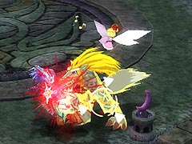
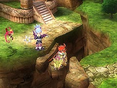
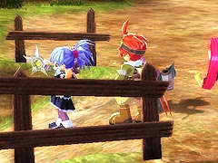
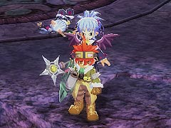
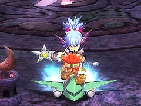
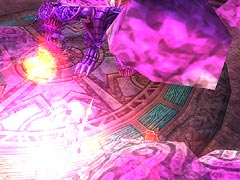
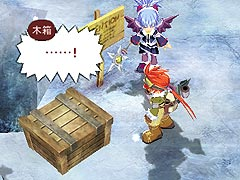
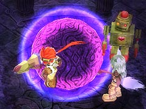

目次 > ゲームについて > 日本Falcom 攻略 > ZWEI II > 情報
らんの眼
ZWEI II (ツヴァイ 2、ZWEI II Plus)
| 概要 | 情報 | 攻略チャート |
| フード交換 | ペットについて | ボス戦 |
| 敵キャラ一覧 | ハンターランク | G-コロッセオ |
| アイテム一覧 | ガジェット一覧 | トレジャー一覧 |
| ダンジョン一覧 | クリアデータ特典 | Plusの追加要素 |
| ZWEI II攻略へ | 目次へ戻る |
| [ 1 ] [ 2 ] [ 3 ] [ 4 ] [ 5 ] [ 6 ] [ 7 ] |
| おんぶにだっこ |
| グラインドギアに乗った状態で、ダイガルドの噛みつき攻撃を食らうと、アルウェンを背負ったままラグナが噛みつかれます。  |
| 交代するだけで万歩計のカウントが増える |
| ワールドマップにある陸地の切れ目の一部では、パートナーと交代するだけで万歩計のカウントが増えてきます。 ただし、下の画像のように操作キャラとパートナーは別々の陸地にいる必要があります。  (別々の陸地)  (ロアルタ村でもできます) |
| 後ろはだぁれ? |
| ダークアルウェン戦で、グラインドギアに乗った状態でダークアルェンのグラフィックを変化させる(猫の耳が生えた状態にする)と、ダークアルェン本体の目が猫の目になります。 しかも、ラグナの後ろに乗っているアルウェンの目までも、本来の赤い目ではなく猫の目になってしまいます。ただし、アルウェンが「チェックスカート」を装備している場合は、アルウェンの目は変化しません。  (倒した瞬間)  (戦闘中) |
| 真ザハール戦の球体 |
| 真ザハール戦では、上空を回る紫色の球体のお陰で高いジャンプ力が得られているようですが、これを破壊してもラグナ達のジャンプ力はなぜか高いままです。  |
| 賽銭箱を閉じる |
| グラインドギアに乗った状態で賽銭箱に触れると、賽銭箱を閉じることができます。その状態で賽銭箱に話しかけると、しゃべれないらしく下の画像のようになってしまいます。  (自力でフタを開けられたら、賽銭を入れてやるぜ) |
| ルナ＝ムンドゥスの球体の光 |
| ルナ＝ムンドゥスにある紫色の球体ですが、装備変更ボタンなどを押すと輝きが止まり(なくなり?)、ボタンを離すと再び輝き始めます。  |
| [ 1 ] [ 2 ] [ 3 ] [ 4 ] [ 5 ] [ 6 ] [ 7 ] |
| 概要 | 情報 | 攻略チャート |
| フード交換 | ペットについて | ボス戦 |
| 敵キャラ一覧 | ハンターランク | G-コロッセオ |
| アイテム一覧 | ガジェット一覧 | トレジャー一覧 |
| ダンジョン一覧 | クリアデータ特典 | Plusの追加要素 |
| ページの上部へ | ZWEI II 攻略へ | 目次へ戻る |